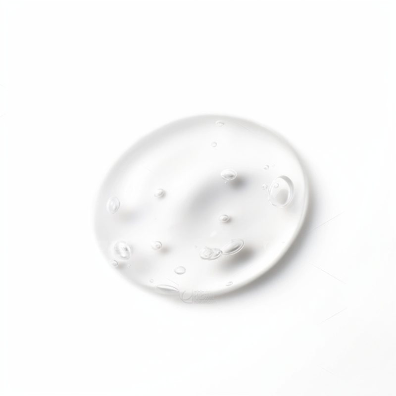

焕能修护系列 · 精华液
焕能舒润调理精华液
PRO REPAIR SERUM 2.0
水感质地，瞬渗透快吸收，不粘腻。第二代 Pro 精华——刷酸、早 C 晚 A 的「万能打底」，敏感肌的极速修护与进阶抗老。

产品描述
不止急救，更重重建。第二代 Pro 精华以 MCRF 丝素肽为核心，构建屏障修护四重堡垒，直击真皮层 ECM——一边织补受损屏障，一边充盈年轻轮廓，全龄适用，无惧敏感。

产品质地
水感质地，瞬渗透、快吸收，不粘腻。
- 瞬渗不黏，流动性强
- 轻盈如水，零负担
- 促渗打底，不搓泥
水感瞬渗，打底不搓泥
水感质地瞬渗透、快吸收，不粘腻；具促渗效果，可作其他功效护肤品前的打底精华，打通肌肤通道。
四重屏障 + ECM 深层支持
微生物、物理、化学、免疫四层屏障同步强韧，并深层支持 ECM 细胞外基质，解决过敏泛红反复问题。
敏肌友好，医美后可用
0 防腐、0 香精、0 酒精配方体系；核心成分 MCRF 为医用转民用，医美光电项目可用。
屏障修护四重堡垒
铸造城墙
角鲨烷、3 重神经酰胺
稳固角质层，合成皮脂膜，隔绝外界刺激源
垒实砖块
柑橘果皮提取物、B5 泛醇
精准击退泛红、刺痛、炎症，敏感急救，提高细胞活性
混凝土牢固
乳酸杆菌发酵产物、海茴香
强韧屏障，提高耐受，维稳抗初老
钢筋结构稳定
MCRF 丝素肽、依克多因、燕麦 β-葡聚糖、七树叶提取物、马齿苋提取物
强化抵抗力，主动修护，内源保湿，消红抗敏
功效实证
MCRF 丝素肽前身为手术与术后恢复材料，主打功效性与安全性，不产生刺激性与耐药性；作用机理为帮助细胞有序排列、提升细胞活性与自愈能力。
配方
MCRF 丝素蛋白（蚕丝提取物）
升级第二代 Pro 精华，建构屏障修护四重堡垒——更修护、更年轻、更强韧。内源帮助细胞有序排列生长，外源抗炎修复屏障，双路径达到强韧屏障的效果。
主要成分
- 泛醇（B5）舒缓刺激，提高细胞活性
- 角鲨烷亲肤锁水，稳固角质层
- 尿囊素舒缓肌肤，温和修护
- MCRF 丝素蛋白（蚕丝提取物）自研核心成分，医用转民用
- 依克多因强化耐受，稳定肤况
- 乳酸杆菌发酵产物平衡微生态，维稳抗初老
复配成分
使用方法
-
1
取量
洁面、调理后，取 2–3 滴精华液于掌心。
-
2
涂抹
全脸涂抹，轻柔按摩至完全吸收，快速镇定舒缓敏感不适。
-
3
打底
作为其他功效护肤品前的打底精华，修护加乘的同时促进后续产品吸收。
适用人群
- 敏感肌急救：对外界刺激耐受差、突发过敏需要极速修护
- 经常刷酸、医美，项目后屏障受损需舒缓刺痛红热
- 反复敏感、泛红，季节性敏感反复，需长期循环改善
- 猛药伴侣：使用猛药后的进阶修护，稳定爆皮干痒
常见问题
MCRF 会产生抗药性吗？
MCRF 丝素蛋白主打功效性与安全性，前身用于手术中和术后恢复，不会产生刺激性和耐药性。
能和其他精华同时使用吗？
可以。MCRF 丝素肽通过帮助细胞有序排列、提升细胞活性和自愈能力起作用，与抗菌消炎、补充皮肤间脂质、加厚屏障是完全不同的路径，互不影响，也不影响其他精华的吸收。
医美后如何搭配修护？
点阵激光等项目的有效性源于可控创伤诱导皮肤再生，而修复依赖细胞与细胞外基质的相互作用。MCRF 让成纤维细胞有序排列，促成细胞增殖填补缺损、促进胶原分泌，双管齐下加快皮肤复原，做到医美刷酸不翻车。
产品影片
推荐搭配


专属服务
官方渠道购买，全系列支持防伪查验
官方旗舰店下单，全国顺丰速运
7 天无理由退换，售后全程跟进
1 对 1 肌肤咨询，定制修护方案